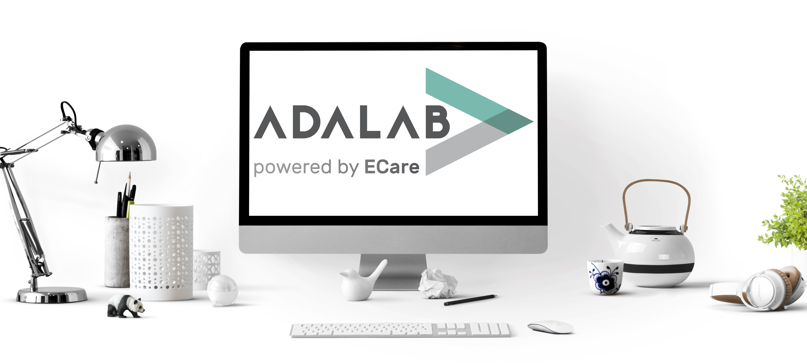
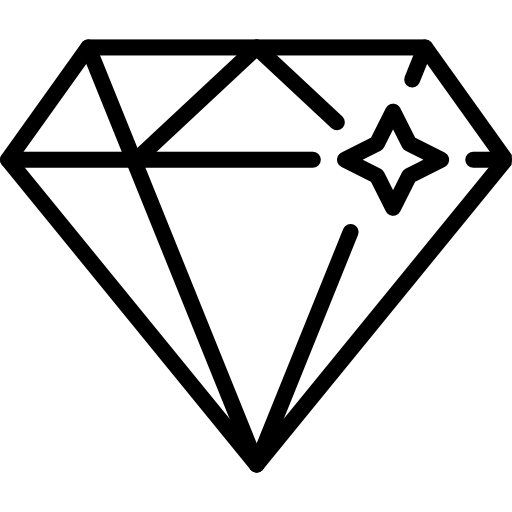
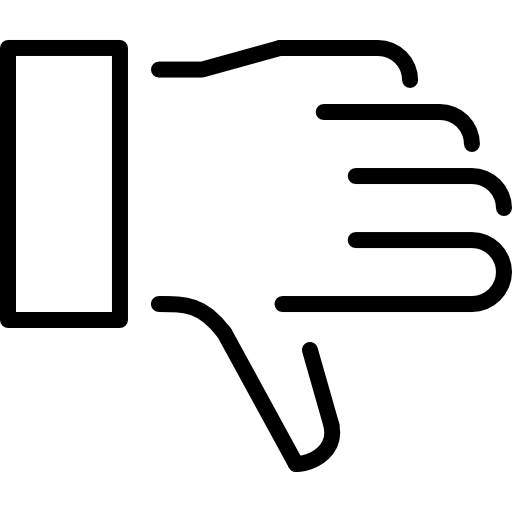
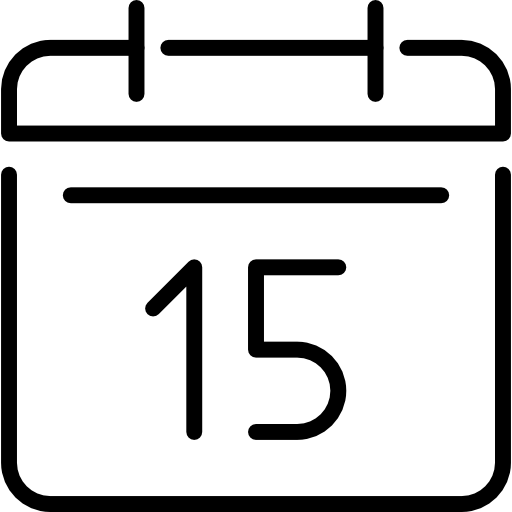
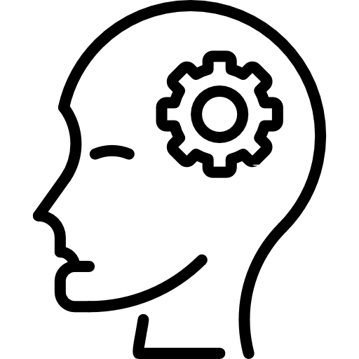
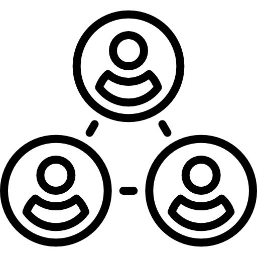

- Equipo multidisciplinar
- Altas dosis de motivación
- Constancia

Somos un equipo de mujeres jóvenes que buscan convertirse en profesionales líderes del mundo digital.
Participamos en un programa integral de formación intensiva en programación front-end y fortalecimiento de competencias profesionales y personales.
En este camino en el que nos hemos encontrado, compartimos una serie de metas comunes:
- Tener el súper-poder de saber programar.
- Combatir los estereotipos.
- Luchar contra la barrera de género en el sector TIC
- Demostrar nuestro talento
- Formar parte de una gran comunidad.
- Transformar nuestras vidas y escribir nuestro futuro en líneas de código.
¡Somos #adalabers!

Fortalezas

Debilidades
- Falta de experiencia como equipo
- Conocimientos en formación
- Primer contacto con el sector
MIEMBROS DE VLEG


Eva Llorca
#Fotógrafa · En Fukai Estudio mezclo mis pasiones, la fotografía y la docencia
Me fascina la programación, ese lenguaje indescifrable... Espero disfrutar de este camino con Adalab y empezar a chapurrear pronto este nuevo idioma.
Planificación y seguimiento
Responsable de organizar y supervisar las tareas, tanto de equipo como individuales, marcar objetivos y hacer un seguimiento para que se cumplan en tiempo y forma.
Gloria Fernández
#Química · Oyente de podcast y seguidora de canales de YouTube family friendly
Mi experiencia profesional ha estado siempre ligada al mundo de la investigación científica siempre en busca de nuevos retos y desafíos. Cuando me hablaron del programa Adalab, lo vi claro, era mi oportunidad de aportar mi conocimiento y reinventarme. Así que: Here we go Adalab!
Aprendizaje
Encargada de valorar los objetivos de aprendizaje de cada miembro del equipo y proponer espacios y metodología de aprendizaje conjunto.
Laura Navarro
#IngenieraQuímica · Alicantina, cat lover y voluntaria de estado civil
He pipeteado en laboratorios y gestionado residuos desde el sector público. Primer contacto diseñando reactores que no explotaran usando bucles if y for. Ahora, atenta a que mi código no le complique el día a personas con diversidad funcional, entre otros. Porque la vida son ciclos y los bucles, ciclos son, esta etapa en Adalab es una apasionante iteración mejorada.
 Comunicación y eventos
Comunicación y eventos
Responsable de compartir los logros del equipo e información de interés en RRSS y otros canales, así como de seleccionar los mejores eventos para mantenerse up-to-date en el sector.
Ma. Virginia Rivas
#Periodista · Friki de las películas de terror y binger sin vergüenza
Trayectoria profesional en el mundo de la comunicación y el marketing digital Estoy en Adalab porque ¡me encantan los retos! y estoy decidida a hacerme un huequecito dentro del complejo mundo de la programación y a disfrutar cada minuto de este viaje
Team building
Encargada de promover la ayuda y colaboración entre todas las integrantes del equipo y propiciar que la comunicación entre todas sea fluida y directa.
¿HABLAMOS?
Escríbenos un correo para cualquier consulta, sugerencia y/o propuesta que tengas.
¡Estaremos encantadas de conocerte!